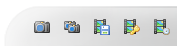
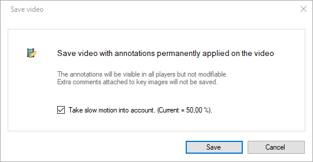
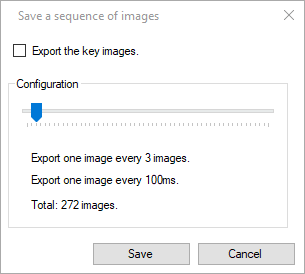
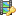
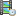
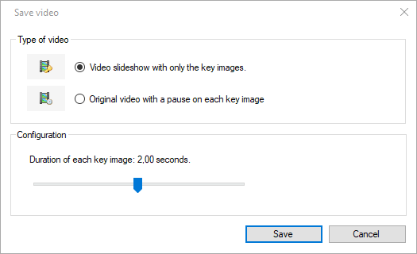

Exporting video and images¶
The video and image export options can be accessed from the export toolbar in the playback screen.
Export a video with annotations painted on¶
To export the current working zone as a new video use the Video export button, the menu , or the context menu .
This will open an export dialog with an option to take the slow motion into account. If checked the resulting video will use the current speed slider to determine the output framerate.
The output video format can be selected in the file name selection dialog between MKV (Matroska), MP4, or AVI. The video codec is always MJPEG.
Note
Drawings added to the video are painted on the output images and will no longer be modifiable. Comments added at the key image level and other non directly visible annotations are not saved in the output.
Tip
To minimize the loss of information only export the video when absolutely necessary and otherwise keep the original video and save the annotations in a separate KVA file.
Export an image¶
To export the current image use the Export image button or the entry of the context menu.
The output image format can be selected in the file name selection dialog between JPEG, PNG, or BMP.
Export an image sequence¶
To export a series of images from the video, use the Export sequence button in the playback screen. This brings up a dialog to configure the frequency at which the images are taken from the video.
If the checkbox Export the key images is checked, the frequency slider is ignored and only the key images are exported.
Export a dual video or dual image¶
When using two playback screens, use the Export video or Export image buttons in the joint controls to create a single output containing both input side by side.
The input videos will be combined frame by frame using the configured synchronization point.
Export a slideshow or a video with pauses¶
To export a slideshow video where only the key images are shown, use the  Export slideshow button.
To export a video where the video is paused on key images but otherwise plays the action normally, use the  Export paused button.
Both options bring up the same dialog to configure the duration of each key image in the output video.
